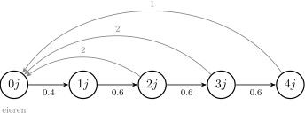

Hoofdstuk 2Toepassingen met matrices

Leerplandoelstellingen (GO! Navigator)
Gevorderde wiskunde (WD3_06.08)
-
• WD3_06.08.13 (MD 06.08.02) De leerlingen gebruiken matrixmodellen om evoluties te beschrijven.
-
– afbakening: migratiematrices, Lesliematrices, matrixvoorstelling van een graaf
-
– afbakening: evenwichtstoestand
-
Didactische uitwerking: overgangsmatrices met hun graaf, migratiematrices en de evolutie van een bevolking, de exacte berekening van de evenwichtstoestand, en Lesliematrices voor de evolutie van een populatie in leeftijdsklassen.
I Overgangsmatrices
1 Opgave
Thomas wil meteoroloog worden. Na bestudering van een groot aantal statistieken voor april komt hij tot de volgende resultaten.
-
• Is het vandaag warm (\(W\)), dan zijn de kansen voor morgen:
\(W:0.6\qquad B:0.3\qquad R:0.1\) -
• Is het vandaag bewolkt (\(B\)), dan:
\(W:0.3\qquad B:0.4\qquad R:0.3\) -
• Is het vandaag regenachtig (\(R\)), dan:
\(W:0.1\qquad B:0.5\qquad R:0.4\)
Vandaag regent het. Maarten wil overmorgen een BBQ organiseren. Wat is de kans dat het mooi weer is?
2 Kansboom

Er is dus \(25\,\%\) kans op mooi weer.
3 Schematische voorstelling: “graaf”

Een gewogen graaf: de knooppunten zijn de toestanden, de pijlen de overgangen, en het gewicht is de kans.
4 Matrix: “overgangsmatrix”
\[ A= \begin {pNiceMatrix}[first-row,last-col,columns-width=2em] W & B & R & \\ 0.6 & 0.3 & 0.1 & W\\ 0.3 & 0.4 & 0.5 & B\\ 0.1 & 0.3 & 0.4 & R \end {pNiceMatrix} \]
De kolommen zeggen waar we van vertrekken (“van”), de rijen waar we aankomen (“naar”). Elke kolom telt op tot \(1\).
Overmorgen:
\[ A^2=A\cdot A= \begin {pNiceMatrix}[columns-width=2em] 0.46 & 0.33 & 0.25\\ 0.35 & 0.40 & 0.43\\ 0.19 & 0.27 & 0.32 \end {pNiceMatrix} \]
Vandaag regent het, dus we lezen de kolom \(R\): de kans op \(W\) overmorgen is \(0.25\), dus \(25\,\%\). Dat is precies wat de kansboom gaf.
Volgende dag: \(A^3=A^2\cdot A\), enzovoort.
5 Oefeningen
Handboek VBTL - Matrices p 58 tot 61: oefeningen 1, 2, 3, 6, 7 en 9. Extra, met de evolutie op lange termijn: 10, 14, 17 en 20 (p 61 tot 64).
VBTL oefening 2 (p 58)
Een pizzeria verkoopt drie soorten bodems: de klassieke (\(A\)), die met een kaaskorst (\(B\)) en de panpizza (\(C\)). De meeste klanten blijven bij hun bodem, maar sommigen stappen over. Per kwartaal geeft de overgangsmatrix \(P\) de verhoudingen.
\[ P= \begin {pNiceMatrix}[first-row,last-col,columns-width=2em] A & B & C & \\ 0.80 & 0.15 & 0.07 & A\\ 0.12 & 0.75 & 0.03 & B\\ 0.08 & 0.10 & 0.90 & C \end {pNiceMatrix} \]
-
(a) Hoeveel procent van wie dit kwartaal een klassieke pizza koopt, doet dat volgend kwartaal opnieuw?
\(80\,\%\) We lezen in de kolom \(A\) (van) de rij \(A\) (naar): \(p_{11}=0.80\). Van de klanten met een klassieke bodem blijft dus \(80\,\%\) bij die bodem.
-
(b) Nu koopt \(45\,\%\) van de klanten een klassieke pizza, \(25\,\%\) een kaaspizza en \(30\,\%\) een panpizza. Bereken de verdeling na één, twee en drie kwartalen.
na drie kwartalen \(37.86\,\%\), \(24.42\,\%\) en \(37.72\,\%\) We zetten de verdeling van nu in een kolommatrix, in dezelfde volgorde als de kolommen van \(P\):
\[ B_0=\begin {pmatrix}0.45\\0.25\\0.30\end {pmatrix} \qquad \text {en}\qquad B_{n+1}=P\cdot B_n . \]
Na één kwartaal:
\[ B_1=P\cdot B_0= \begin {pmatrix} 0.80 & 0.15 & 0.07\\ 0.12 & 0.75 & 0.03\\ 0.08 & 0.10 & 0.90 \end {pmatrix} \begin {pmatrix}0.45\\0.25\\0.30\end {pmatrix} =\begin {pmatrix}0.4185\\0.2505\\0.3310\end {pmatrix} \begin {matrix}A\\B\\C\end {matrix} \]
Elk element is een rij maal een kolom. Zo is het eerste element
\[ 0.80\cdot 0.45+0.15\cdot 0.25+0.07\cdot 0.30=0.36+0.0375+0.021=0.4185 . \]
Wie na een kwartaal een klassieke pizza koopt, kocht er al een en bleef, of stapte over van een kaas- of een panpizza.
Zo gaan we verder, telkens met de vorige verdeling:
\[ B_2=P\cdot B_1=\begin {pmatrix}0.3955\\0.2480\\0.3564\end {pmatrix} \qquad B_3=P\cdot B_2=\begin {pmatrix}0.3786\\0.2442\\0.3772\end {pmatrix} \]
Rechtstreeks kan het ook met een macht: \(B_3=P^3\cdot B_0\).
klassiek (\(A\)) kaaskorst (\(B\)) pan (\(C\)) nu \(45\,\%\) \(25\,\%\) \(30\,\%\) na \(1\) kwartaal \(41.85\,\%\) \(25.05\,\%\) \(33.10\,\%\) na \(2\) kwartalen \(39.55\,\%\) \(24.80\,\%\) \(35.64\,\%\) na \(3\) kwartalen \(37.86\,\%\) \(24.42\,\%\) \(37.72\,\%\) De panpizza wint terrein: ze houdt \(90\,\%\) van haar klanten, de klassieke bodem maar \(80\,\%\).
-
(c) Hoeveel procent van de klanten koopt volgend kwartaal dezelfde bodem als nu?
\(81.75\,\%\) Wie blijft, staat op de diagonaal van \(P\): \(0.80\), \(0.75\) en \(0.90\). Elke groep klanten nemen we met haar eigen kans om te blijven:
\[ 0.80\cdot 0.45+0.75\cdot 0.25+0.90\cdot 0.30=0.36+0.1875+0.27=0.8175 . \]
Volgend kwartaal koopt dus \(81.75\,\%\) van de klanten dezelfde bodem. Dat is geen element van \(B_1\): daarin zitten ook de klanten die van bodem wisselden.
VBTL oefening 6 (p 59)
Een zwemclub deelt haar leden in naar ervaring en leeftijd. Na de zwemschool (\(Z\)) word je waterduivel (\(W\)), daarna competitiezwemmer (\(C\)) en ten slotte senior (\(S\)). De overgang van jaar tot jaar staat in de overgangsmatrix \(A\).
\[ A= \begin {pNiceMatrix}[first-row,last-col,columns-width=2em] Z & W & C & S & \\ 0.5 & 0 & 0 & 0 & Z\\ 0.3 & 0.6 & 0 & 0 & W\\ 0 & 0.4 & 0.7 & 0 & C\\ 0 & 0 & 0.2 & 0.8 & S \end {pNiceMatrix} \]
-
(a) Hoe zie je aan \(A\) dat enkel de waterduivels allemaal in de club blijven?
enkel de kolom \(W\) telt op tot \(1\) Een kolom zegt waar de leden van één groep een jaar later zitten. We tellen elke kolom op:
\[ Z:\ 0.5+0.3=0.8 \qquad W:\ 0.6+0.4=1 \qquad C:\ 0.7+0.2=0.9 \qquad S:\ 0.8 \]
Enkel de kolom \(W\) telt op tot \(1\): elke waterduivel blijft waterduivel of wordt competitiezwemmer. In de andere groepen verlaat telkens een deel de club: \(20\,\%\) van de zwemschool, \(10\,\%\) van de competitiezwemmers en \(20\,\%\) van de senioren. In de graaf zijn dat de gestreepte pijlen.

-
(b) De club telt nu \(60\) leden in de zwemschool, \(30\) waterduivels, \(30\) competitiezwemmers en \(20\) senioren. Bereken de samenstelling na drie jaar.
ongeveer \(8\), \(23\), \(38\) en \(27\) leden
\[ B_0=\begin {pmatrix}60\\30\\30\\20\end {pmatrix} \qquad B_1=A\cdot B_0= \begin {pmatrix} 0.5 & 0 & 0 & 0\\ 0.3 & 0.6 & 0 & 0\\ 0 & 0.4 & 0.7 & 0\\ 0 & 0 & 0.2 & 0.8 \end {pmatrix} \begin {pmatrix}60\\30\\30\\20\end {pmatrix} =\begin {pmatrix}30\\36\\33\\22\end {pmatrix} \]
Zo is het tweede element \(0.3\cdot 60+0.6\cdot 30=18+18=36\): de nieuwe waterduivels uit de zwemschool en de waterduivels die bleven.
\[ B_2=A\cdot B_1=\begin {pmatrix}15\\30.6\\37.5\\24.2\end {pmatrix} \qquad B_3=A\cdot B_2=\begin {pmatrix}7.5\\22.86\\38.49\\26.86\end {pmatrix} \begin {matrix}Z\\W\\C\\S\end {matrix} \]
Na drie jaar zijn er ongeveer \(8\) leden in de zwemschool, \(23\) waterduivels, \(38\) competitiezwemmers en \(27\) senioren. De club slinkt van \(140\) naar ongeveer \(96\) leden, en vooral de zwemschool loopt leeg.
-
(c) De zwemschool schrijft nu elk jaar zoveel nieuwe leden in dat ze er steeds \(60\) telt. Hoe ziet de nieuwe overgangsmatrix eruit? Bereken daarmee de samenstelling na drie jaar.
\(a_{11}\) wordt \(1\); dan \(60\), ongeveer \(42\), \(42\) en \(27\) leden Van de \(60\) leden in de zwemschool blijft de helft: \(0.5\cdot 60=30\). Er moeten er dus elk jaar \(30\) bij, en dat is opnieuw \(0.5\cdot 60\). Zolang de zwemschool \(60\) leden telt, is
\[ Z_{n+1}=\underbrace {0.5\,Z_n}_{\text {blijven}} +\underbrace {0.5\,Z_n}_{\text {nieuw}}=1\cdot Z_n . \]
Enkel het element linksboven verandert:
\[ A'= \begin {pNiceMatrix}[first-row,last-col,columns-width=2em] Z & W & C & S & \\ 1 & 0 & 0 & 0 & Z\\ 0.3 & 0.6 & 0 & 0 & W\\ 0 & 0.4 & 0.7 & 0 & C\\ 0 & 0 & 0.2 & 0.8 & S \end {pNiceMatrix} \]
\[ B_1=A'\cdot B_0=\begin {pmatrix}60\\36\\33\\22\end {pmatrix} \qquad B_2=A'\cdot B_1=\begin {pmatrix}60\\39.6\\37.5\\24.2\end {pmatrix} \qquad B_3=A'\cdot B_2=\begin {pmatrix}60\\41.76\\42.09\\26.86\end {pmatrix} \begin {matrix}Z\\W\\C\\S\end {matrix} \]
Na drie jaar telt de club \(60\) leden in de zwemschool, ongeveer \(42\) waterduivels, \(42\) competitiezwemmers en \(27\) senioren: samen ongeveer \(171\) leden, en de club groeit. De kolom \(Z\) van \(A'\) telt op tot \(1.3\). Strikt genomen is \(A'\) dus geen overgangsmatrix meer: de extra \(0.5\) is geen overgang, maar het aantal nieuwe leden per lid van de zwemschool.
II Migratiematrices
1 Opgave
In een bepaald land verhuist elk jaar \(10\,\%\) van de stedelingen naar het platteland, en \(15\,\%\) van de plattelandsbewoners naar de stad. In \(2002\) woonden er \(68\,000\) mensen in de steden en \(82\,000\) op het platteland.
2 Graaf
3 Matrix: “migratiematrix” \(M\)
\[ M= \begin {pNiceMatrix}[first-row,last-col,columns-width=2em] S & P & \\ 0.90 & 0.15 & S\\ 0.10 & 0.85 & P \end {pNiceMatrix} \]
4 Bevolkingsevolutie
De bevolkingsmatrix in \(2002\) is
\[ B_{2002}= \begin {pmatrix}68\,000\\82\,000\end {pmatrix} \begin {matrix}S\\P\end {matrix} \]
\(1\) jaar later:
\(\seteqnumber{0}{}{0}\)\begin{align*} 0.90\cdot 68\,000+0.15\cdot 82\,000 &= 73\,500 \quad \text {in de stad}\\ 0.10\cdot 68\,000+0.85\cdot 82\,000 &= 76\,500 \quad \text {op het platteland} \end{align*} of korter:
\[ B_{2003}=M\cdot B_{2002}=\begin {pmatrix}73\,500\\76\,500\end {pmatrix} \]
\(2\) jaar later: \(B_{2004}=M^2\cdot B_{2002}=\cdots \)
Komt er op een bepaald moment een evenwicht?
\[ B_{2012}=M^{10}\cdot B_{2002}=\begin {pmatrix}88\,761\\61\,239\end {pmatrix} \qquad M^{20}\cdot B_{2002}=\begin {pmatrix}89\,930\\60\,070\end {pmatrix} \]
\[ M^{30}\cdot B_{2002}=\begin {pmatrix}89\,996\\60\,004\end {pmatrix} \qquad \cdots \qquad M^{50}\cdot B_{2002}=\begin {pmatrix}90\,000\\60\,000\end {pmatrix} \]
Op een bepaald ogenblik ontstaat er dus een evenwicht.
5 Exacte berekening van de evenwichtstoestand
Stel \(s=\) het aantal stedelingen bij evenwicht en \(p=\) het aantal plattelandsbewoners bij evenwicht. Dan verandert de bevolkingsmatrix niet meer:
\[ M\cdot \begin {pmatrix}s\\p\end {pmatrix}=\begin {pmatrix}s\\p\end {pmatrix} \qquad \text {met}\qquad s+p=150\,000 \]
\(\seteqnumber{0}{}{0}\)\begin{align*} &\Leftrightarrow & \begin{cases} 0.90s+0.15p=s\\ 0.10s+0.85p=p\\ s+p=150\,000 \end {cases} &\Leftrightarrow \begin{cases} -0.10s+0.15p=0\\ 0.10s-0.15p=0\\ s+p=150\,000 \end {cases}\\[6pt] &\Leftrightarrow & \begin{cases} s=\dfrac {0.15}{0.10}\,p=1.5\,p\\ s+p=150\,000 \end {cases} &\Leftrightarrow \begin{cases} p=60\,000\\ s=90\,000 \end {cases} \end{align*}
6 Oefeningen
Handboek VBTL - Matrices p 59 tot 63: oefeningen 4, 5, 8, 16 en 18.
III Populatie- of Lesliematrices
1 Opgave
Een vogelsoort wordt hoogstens \(4\) jaar oud. We verdelen de populatie in leeftijdsklassen van \(1\) jaar: \(0j\) (de eieren), \(1j\), \(2j\), \(3j\) en \(4j\). Van de \(0\)-jarigen overleeft \(40\,\%\) het eerste jaar, van elke volgende klasse overleeft \(60\,\%\). Vogels van \(2j\) en \(3j\) leggen elk gemiddeld \(2\) eieren per jaar, vogels van \(4j\) gemiddeld \(1\) ei. Vandaag telt de populatie \(180\) eieren, \(80\) eenjarigen, \(50\) tweejarigen, \(30\) driejarigen en \(20\) vierjarigen.
2 Graaf

3 Matrix: “Lesliematrix” \(L\)
\[ L= \begin {pNiceMatrix}[first-row,last-col,columns-width=1.6em] 0j & 1j & 2j & 3j & 4j & \\ 0 & 0 & 2 & 2 & 1 & 0j\\ 0.4 & 0 & 0 & 0 & 0 & 1j\\ 0 & 0.6 & 0 & 0 & 0 & 2j\\ 0 & 0 & 0.6 & 0 & 0 & 3j\\ 0 & 0 & 0 & 0.6 & 0 & 4j \end {pNiceMatrix} \]
De eerste rij bevat de geboortecijfers, de onderdiagonaal de overlevingskansen, en alle andere plaatsen zijn onmogelijke overgangen. Een Lesliematrix is dus eigenlijk een bijzondere overgangsmatrix.
4 Evolutie
\[ P_0=\begin {pmatrix}180\\80\\50\\30\\20\end {pmatrix} =\text {``populatiematrix''} \qquad \text {na }1j:\ P_1=L\cdot P_0=\begin {pmatrix}180\\72\\48\\30\\18\end
{pmatrix} \]
\[ \text {na }16j:\ P_{16}=L^{16}\cdot P_0=\begin {pmatrix}92\\38\\24\\15\\9\end {pmatrix} \ \ \Bigl (\text {samen }178\Bigr ) \qquad \text {na }32j:\ P_{32}=L^{32}\cdot P_0=\begin
{pmatrix}45\\19\\12\\7\\5\end {pmatrix} \ \ \Bigl (\text {samen }88\Bigr ) \]
5 Besluit
De populatie (samen \(360\) bij de start) halveert om de \(16\) jaar. De vogelsoort zal uitsterven.
6 Oefeningen
Handboek VBTL - Matrices p 61 tot 62: oefeningen 11, 12, 13 en 15. Extra: 19 (p 64), een kweker die zijn plantjes zo verkoopt dat de verdeling over de klassen jaar na jaar gelijk blijft.